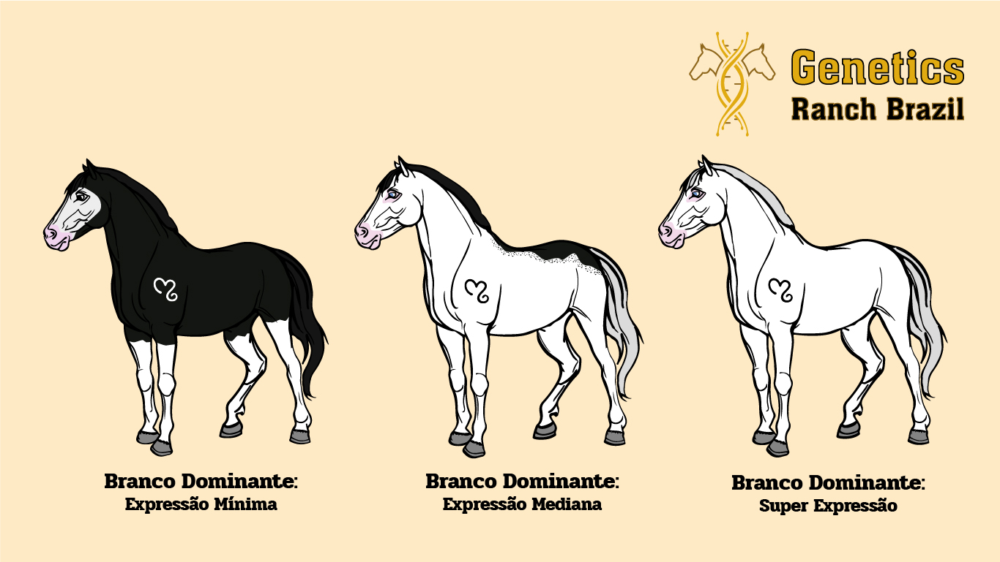

Gene KIT
PADRÃO DE BRANCO: Branco Dominante
Gene dominante responsável por um padrão de pelagem que se caracteriza por grandes manchas brancas bem definidas sobre a cor base.
O padrão de pelagem conhecido como Branco Dominante (ou simplesmente branco, ou manchado de branco) é resultado de mutações no gene KIT. Este gene é responsável pela produção de áreas brancas no corpo do animal, com a extensão dessas manchas sendo altamente variável. Elas podem se manifestar desde pequenas áreas brancas localizadas no rosto e nas pernas até uma cobertura completa, deixando o animal inteiramente branco. Embora os olhos dos cavalos com esse padrão sejam geralmente castanhos, em alguns casos podem apresentar coloração azul.
Até o momento, foram identificadas trinta e quatro variantes do gene Branco Dominante, designadas como W1, W2 até W35, cada uma com um impacto diferente na expressão do padrão branco. Embora o termo "branco" seja frequentemente utilizado para descrever essa característica, é importante entender que, geneticamente, o branco resulta de uma exclusão de cor, onde a pigmentação é ausente em determinadas áreas da pelagem.
Nos cavalos, o gene Branco Dominante é codificado por um único lócus dominante, identificado como W, e ocorre no gene KIT. Por ser dominante, basta que o animal herde uma única cópia do alelo para que o padrão branco se manifeste. Apesar de o gene eliminar completamente a cor em determinadas regiões do corpo, a quantidade e a distribuição dessa exclusão, ou seja, o grau de expressão do gene, dependem da variante específica herdada pelo animal.
É importante salientar que o padrão do Branco Dominante não deve ser confundido com albinismo, condição que não ocorre em equinos. A ausência de cor nos cavalos com o gene W é um fenômeno distinto, regulado por mutações específicas no gene KIT, sem a relação com a falta total de pigmentação e outras características típicas do albinismo.
GRAU DE VARIABILIDADE DE EXPRESSÃO DO GENE
O grau de expressão de um gene refere-se à intensidade com que ele é ativado para produzir seu produto funcional, como proteínas ou RNA, o que influencia a manifestação de um traço genético no organismo. No caso do gene Branco Dominante, assim como em outros padrões de branco, o grau de expressão pode variar significativamente. Isso pode resultar em pequenas manchas brancas (expressão mínima) ou em um corpo quase totalmente branco (expressão intensa ou super expressão). Assim, o grau de expressão pode ser categorizado em três níveis distintos.
Imagem: (à esquerda) animal de coloração predominante com manchas brancas distribuídas na face e nos membros locomotores, similar ao padrão causado pelo gene Splashed White – uma característica frequentemente associada ao alelo W20; (centro) exibe um animal com a maior parte do corpo coberta por uma extensa mancha branca, representando cerca de 90% da superfície corporal, muitas vezes confundido com o padrão Sabino – comumente visto nos alelos W5, W15 e W19; (à direita) animal completamente branco (associado ao alelo W2) ou quase totalmente branco, com pequenas manchas de cor concentradas principalmente nas orelhas (relacionado ao alelo W3).
AS DIVERSAS VARIANTES DO BRANCO DOMINANTE
Dada a vasta diversidade de mutações que o gene pode apresentar, é comum encontrá-lo em uma ampla variedade de raças de cavalos. Esse padrão de pelagem, que resulta da exclusão parcial ou total de cor devido a alterações no genótipo do gene KIT, pode se manifestar de diferentes maneiras, dependendo da variante específica do gene que o animal carrega.
Abaixo, são listadas todas as variantes descobertas até o presente, juntamente com informações detalhadas sobre sua ocorrência e impacto no fenótipo dos animais. Entretanto, a pesquisa sobre o gene Branco Dominante está longe de ser concluída. Dada a complexidade genética e o número de diferentes manifestações fenotípicas, é muito provável que novas variantes sejam identificadas com o avanço dos estudos. Pesquisas em andamento têm o potencial de expandir nosso conhecimento sobre as mutações do gene KIT, bem como suas interações com outros genes que influenciam a cor da pelagem equina, abrindo caminho para novas descobertas no campo da genética equina.
VARIANTE - W1
Égua Franches-Montagnes com pouca pigmentação residual.
Fonte: www.researchgate.net/figure/Dominant-White-Phenotype-in-Horses-A-Franches-Montagnes-mare-with-little-residual_fig1_5848520
W1 - A variante teve sua origem na égua Cigale, nascida em 1957, dentro da raça Franches-Montagnes. Os cavalos que possuem essa variante apresentam predominantemente uma pelagem branca, embora alguns possam nascer com áreas pigmentadas ao longo do dorso, as quais tendem a desaparecer com o passar do tempo.
Esses animais podem ser tanto homozigotos (W1W1) quanto heterozigotos (nW1), sem manifestar qualquer anomalia ou patologia associada ao seu genótipo, o que indica que a variante não está relacionada a problemas de saúde ou defeitos genéticos significativos.
Égua Franches-Montagnes com pouca pigmentação residual.
Fonte: www.researchgate.net/figure/Dominant-White-Phenotype-in-Horses-A-Franches-Montagnes-mare-with-little-residual_fig1_5848520
VARIANTE - W2
KY. Colonel.
Fonte: https://sporthorse-data.com/pedigree/ky-colonel
W2 - A variante teve sua origem no garanhão KY. Colonel, de pelagem Alazã com marcações brancas extensas nascido em 1957, presente na raça Puro Sangue Inglês. Os cavalos que possuem essa variante apresentam uma pelagem completamente branca.
Esses animais podem ser tanto homozigotos (W2W2) quanto heterozigotos (nW2), sem manifestar qualquer anomalia ou patologia associada ao seu genótipo, o que indica que a variante não está relacionada a problemas de saúde ou defeitos genéticos significativos.
KY. Colonel.
Fonte: https://sporthorse-data.com/pedigree/ky-colonel
VARIANTE - W3
R. Khasper.
Fonte: from-dark-bays-to-dappled-grays.tumblr.com
W3 - A variante teve sua origem no garanhão R. Khasper, nascido em 1996, presente na raça Puro Sangue Árabe. Os cavalos que possuem essa variante apresentam uma pelagem parcialmente branca.
Até o presente momento, somente animais heterozigotos (nW3) foram documentados, o que sugere que a homozigose (W3W3) seja embrionária letal (condição genética que resulta na morte do embrião durante as primeiras fases do desenvolvimento gestacional).
R. Khasper.
Fonte: from-dark-bays-to-dappled-grays.tumblr.com
VARIANTE - W4
Camarillo White Horse.
Fonte: www.horsebreedspictures.com/camarillo-white-horse.asp
W4 - Em 1912, nasceu um potro branco de olhos castanhos chamado Sultan, que se tornaria o "embaixador" da raça Camarillo White Horse. Em 1921, Adolfo Camarillo comprou Sultan e o cruzou com éguas da raça Morgan, tornando a raça famosa por suas aparições em desfiles e eventos na Califórnia. Após a morte de Adolfo em 1958, sua filha Carmen continuou exibindo os cavalos até 1987, quando, após sua morte, os animais foram leiloados.
Em 1991, com apenas onze cavalos restantes, surgiu a preocupação com a extinção da raça, o que levou à criação da Associação do Camarillo White Horse em 1992. Em 2010, a população chegou a vinte cavalos.
A mutação que caracteriza a raça é causada por uma alteração de um único nucleotídeo no gene KIT, resultando em uma proteína não funcional que afeta o desenvolvimento das células pigmentares, levando ao fenótipo de pelagem branca. Esse gene é herdado de forma dominante, mas animais homozigotos (W4W4) nunca foram identificados, sugerindo que essa condição seja letal durante o desenvolvimento embrionário.
Camarillo White Horse.
Fonte: www.horsebreedspictures.com/camarillo-white-horse.asp
VARIANTE - W5
Puchilingui.
Fonte: br.pinterest.com/pin/220183869257755634/
W5 - A variante teve sua origem no garanhão Puchilingui, nascido em 1984, presente na raça Puro Sangue Inglês. Os cavalos que possuem essa variante apresentam uma pelagem completamente branca ou salpicada semelhante ao padrão produzido pelo gene Sabino.
Até o presente momento, somente animais heterozigotos (nW5) foram documentados, o que sugere que a homozigose (W5W5) seja embrionária letal (condição genética que resulta na morte do embrião durante as primeiras fases do desenvolvimento gestacional).
Puchilingui.
Fonte: br.pinterest.com/pin/220183869257755634/
VARIANTE - W6
Marumatsu Live.
Fonte: www.stableexpress.com/?T=Marumatsu%20Live%20-%20Japanese%20Racehorse
W6 - Essa variante foi identificada em apenas um animal, e acredita-se que sua origem esteja relacionada à égua Marumatsu Live, da raça Puro Sangue Inglês. O cavalo apresenta uma pelagem quase inteiramente branca.
Pode ser tanto homozigoto (W6W6) quanto heterozigoto (nW6), sem manifestar qualquer anomalia ou patologia associada ao seu genótipo, o que indica que a variante não está relacionada a problemas de saúde ou defeitos genéticos significativos.
Marumatsu Live.
Fonte: www.stableexpress.com/?T=Marumatsu%20Live%20-%20Japanese%20Racehorse
VARIANTE - W7
Turf Club.
Fonte: https://loszingenetika.com/category/white-hairs/
W7 - Essa variante foi identificada em uma potra parcialmente branca em 2005, e acredita-se que sua origem esteja relacionada ao garanhão Turf Club, presente na raça Puro Sangue Inglês. Os cavalos que possuem essa variante apresentam uma pelagem parcialmente branca.
Esses animais podem ser tanto homozigotos (W7W7) quanto heterozigotos (nW7), sem manifestar qualquer anomalia ou patologia associada ao seu genótipo, o que indica que a variante não está relacionada a problemas de saúde ou defeitos genéticos significativos.
Turf Club.
Fonte: https://loszingenetika.com/category/white-hairs/
VARIANTE - W8
Pokkadis vom Rosenhof.
Fonte: www.pferdefarben.eu/WhiteSpotting.html
W8 - Variante identificada em animal parcialmente branco e acredita-se que sua origem esteja relacionada ao animal nomeado Pokkadis vom Rosenhof, sendo presente em animais da raça Cavalo Islandês. Os cavalos que possuem essa variante apresentam uma pelagem salpicada de branco, semelhante ao padrão produzido pelo gene Sabino. Esses animais podem ser tanto homozigotos (W8W8) quanto heterozigotos (nW8), sem manifestar qualquer anomalia ou patologia associada ao seu genótipo, o que indica que a variante não está relacionada a problemas de saúde ou defeitos genéticos significativos.
Pokkadis vom Rosenhof.
Fonte: www.pferdefarben.eu/WhiteSpotting.html
VARIANTE - W9
(AUSÊNCIA DE REGISTRO FOTOGRÁFICO) W9 - Esta variante foi identificada em 2006 em um animal completamente branco da raça Holstein. Essa variante pode se manifestar tanto em sua forma homozigota (W9W9) quanto heterozigota (nW9), sem apresentar qualquer anomalia ou patologia associada ao genótipo, sugerindo que não está vinculada a problemas de saúde ou defeitos genéticos significativos.
VARIANTE - W10
GQ Santana.
Fonte: www.horse-genetics.com/quarter-horse-colors.html
W10 - A variante teve sua origem no garanhão GQ Santana, nascido em 2000, presente na raça Quarto de Milha. Os cavalos que possuem essa variante apresentam uma pelagem completamente branca ou semelhante ao padrão produzido pelo gene Sabino.
Esses animais podem ser tanto homozigotos (W10W10) quanto heterozigotos (nW10), sem manifestar qualquer anomalia ou patologia associada ao seu genótipo, o que indica que a variante não está relacionada a problemas de saúde ou defeitos genéticos significativos.
GQ Santana.
Fonte: www.horse-genetics.com/quarter-horse-colors.html
VARIANTE - W11
Schimmel.
Fonte: www.pferdefarben.eu/WhiteSpotting.html
W11 - Essa variante foi identificada em um animal completamente branco em 1997, e acredita-se que sua origem esteja relacionada ao garanhão Schimmel, presente na raça South German Draft. Os cavalos que possuem essa variante apresentam uma pelagem completamente branca. Esses animais podem ser tanto homozigotos (W11W11) quanto heterozigotos (nW11), sem manifestar qualquer anomalia ou patologia associada ao seu genótipo, o que indica que a mesma não está relacionada a problemas de saúde ou defeitos genéticos significativos.
Schimmel.
Fonte: www.pferdefarben.eu/WhiteSpotting.html
VARIANTE - W12
(AUSÊNCIA DE REGISTRO FOTOGRÁFICO) W12 - Esta variante foi identificada em um único potro da raça Puro Sangue Inglês, nascido e falecido em 2010, que apresentava aproximadamente 50% do corpo branco. Acredita-se que essa variante pode se manifestar tanto em sua forma homozigota (W12W12) quanto heterozigota (nW12), sem demonstrar qualquer anomalia ou patologia associada ao seu genótipo, o que indica que não está relacionada a problemas de saúde ou defeitos genéticos significativos.
VARIANTE - W13
Pônei de Shetland completamente branco, heterozigoto para W13.
Fonte: https://vgl.ucdavis.edu/news/dominant-white-test-update-w13
W13 - A variante foi inicialmente identificada em um cruzamento entre um Quarto de Milha e um Paso Peruano, sendo amplamente aceito que tenha sido herdada do Quarto de Milha. Contudo, um exemplar da raça American White Horse (e sua descendência) também apresenta essa variante, apesar de não haver registros de ancestralidade comum com o Quarto de Milha. Pode estar presente nas raças: Quarto de Milha, Pônei de Shetland e American Miniature Horse.
Os cavalos que possuem esse gene apresentam uma pelagem parcialmente ou completamente branca, pele rosada e possivelmente com olhos claros. Até o presente momento, somente animais heterozigotos (nW13) para o gene foram documentados, o que sugere que a homozigose (W13W13) seja embrionária letal (condição genética que resulta na morte do embrião durante as primeiras fases do desenvolvimento gestacional).
Atualmente, a equipe de pesquisa equina do Laboratório de Genética Veterinária (VGL), da Escola de Medicina Veterinária da Universidade da Califórnia em Davis (UC Davis), sob a liderança da Dra. Rebecca Bellone, está realizando um estudo com animais das raças American Miniature Horses e Pônei de Shetland, com o objetivo de aprofundar o entendimento sobre o gene e suas variantes.
Pônei de Shetland completamente branco, heterozigoto para W13.
Fonte: https://vgl.ucdavis.edu/news/dominant-white-test-update-w13
VARIANTE - W14
Shirayukihime.
Fonte: Página Colored Thoroughbreds no Facebook. Disponível em: https://www.facebook.com/ColouredThoroughbreds/photos/shirayukihime-jpn-1996white-mare-bred-by-northern-farm-siredby-dark-brownstall/1449772731896640/
W14 - A variante teve sua origem na égua Shirayukihime, nascida em 1996, presente na raça Puro Sangue Inglês. Os cavalos que possuem essa variante apresentam uma pelagem completamente branca. Esses animais podem ser tanto homozigotos (W14W14) quanto heterozigotos (nW14), sem manifestar qualquer anomalia ou patologia associada ao seu genótipo, o que indica que a variante não está relacionada a problemas de saúde ou defeitos genéticos significativos.
Shirayukihime.
Fonte: Página Colored Thoroughbreds no Facebook. Disponível em: https://www.facebook.com/ColouredThoroughbreds/photos/shirayukihime-jpn-1996white-mare-bred-by-northern-farm-siredby-dark-brownstall/1449772731896640/
VARIANTE - W15
W15 - Teve sua origem no garanhão Khartoon Klassic, nascido em 1996, da raça Puro Sangue Árabe. O fenótipo associado a variante se altera conforme o genótipo: animais homozigotos (W15W15) apresentam pelagem completamente branca, enquanto os heterozigotos (nW15) possuem pelagem parcialmente branca. Em ambos os casos, não há registro de anomalias ou patologias relacionadas ao genótipo, sugerindo que a variante não está ligada a problemas de saúde ou defeitos genéticos significativos.
Akhrobella, uma potra Puro Sangue Árabe, foi identificada com a rara homozigose para o gene W15, algo anteriormente considerado letal. Esta descoberta, realizada pela Etalon Diagnostics, demonstrou que a homozigose pode ocorrer em animais vivos, embora as implicações completas ainda sejam pouco compreendidas devido ao número limitado de portadores do gene. Em 2015, uma outra potra homozigota para W15, chamada Angel Khake "Wendy", filha de Khartoon Khlassic, também foi descoberta. No entanto, Wendy faleceu aos três meses de idade devido à Doença do Músculo Branco (ou Distrofia Muscular Nutricional), resultado de uma deficiência de selênio durante a gestação, sem relação com a genética da cor de sua pelagem.
Khartoon Khlassic.
Fonte: Página Khartoon Khlassic, Sabino Arabian & Purebred Pinto Arabians, no Facebook. Disponível em: www.facebook.com/photo?fbid=1837519443033880&set=a.469249348578083&locale=pt_BR
Akhrobella.
Fonte: www.etalondx.com
VARIANTE - W16
(AUSÊNCIA DE REGISTRO FOTOGRÁFICO) W16 - Esta variante foi identificada em uma linhagem com três cavalos quase totalmente brancos, e acredita-se que sua origem esteja relacionada à égua Celene, nascida em 2003, e está presente em animais da raça Oldenburger. Cavalos com essa variante apresentam pelagem parcialmente branca e podem ser tanto homozigotos (W16W16) quanto heterozigotos (nW16), sem manifestar anomalias ou patologias associadas ao seu genótipo. Isso sugere que a W16 não está ligada a problemas de saúde ou defeitos genéticos significativos.
VARIANTE - W17
Hakubahime.
Fonte: http://www.pferdefarben.eu/WhiteSpotting
W17 - Variante identificada em um animal nascido em 2010, e acredita-se que sua origem esteja relacionada ao garanhão Hakubahime, presente na raça de Cavalo de Tração Japonês. Os cavalos que possuem essa variante apresentam uma pelagem completamente branca com a possibilidade de olhos claros (pode apresentar heterocromia). Esses animais podem ser tanto homozigotos (W17W17) quanto heterozigotos (nW17), sem manifestar qualquer anomalia ou patologia associada ao seu genótipo, o que indica que a mesma não está relacionada a problemas de saúde ou defeitos genéticos significativos.
Hakubahime.
Fonte: http://www.pferdefarben.eu/WhiteSpotting
REFERÊNCIAS
Linkage. Site Mundo Educação. Disponível em: https://mundoeducacao.uol.com.br/
biologia/linkage.htm
More about Tobiano. Site Etalon Diagnostics. Disponível em: https://www.etalondx.com/tobiano-to
REZENDE, Adalgiza S. Carneiro de; COSTA, Maria Dulcinéia da. Pelagem dos equinos: nomenclatura e genética. 4ª ed. Belo Horizonte/MG: FEPMVZ Editora, 2019.
SPONENBERG, Dan Phillip; BELLONE, Rebecca. Equine Color Genetics. 4ª ed. Hoboken/NJ: John Wiley & Sons, Inc., 2017.
Tobiano. Site Animal Genetics. Disponível em: https://animalgenetics.com/horse-tests/equine-pattern-tests/101-tobiano/
What is a Tobiano horse - Traits, genes and breeds. Site Horse and Us - Multimedia Educational Content About Horses. Disponível em: https:// www.horsesandus.com/what-is-a-tobiano-horse/